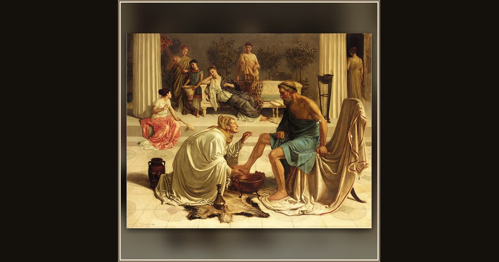

Eurycleia Recognizing Ulysses
Circle of Edward Poynter · 19th century · Wikimedia Commons
Watch the old nurse's upward glance: Poynter freezes the half-second her fingers reach the scar and her eyes fly to his face, the copper foot-basin still between them (Od. 19.467-475). Around her the Victorian painter heaps on invented luxury - a leopard-skin